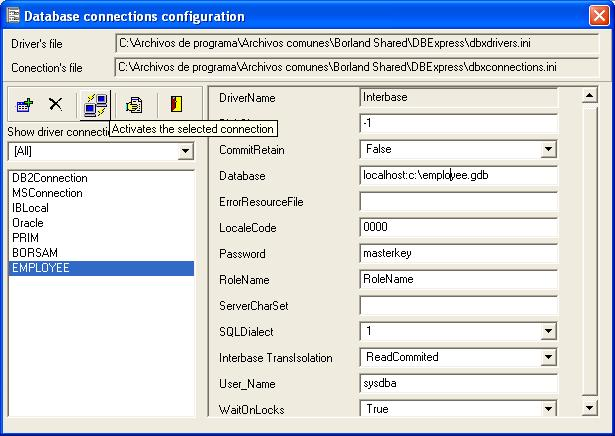
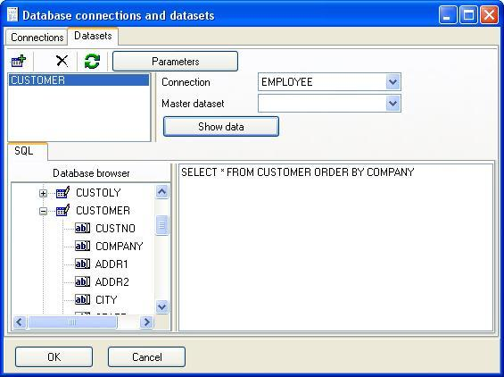

To print a report you usually need a dataset, for example a list of customers, employees, projects,.... This is not a requirement, you can design your report without any database source.
The first step of report design procedure should be open the main dataset, the engine will print the detail section (or sections) for each record in the dataset. This happens for each subreport, you can have more than one subreport or also child subreports.
In the sample we will use DBExpress driver to connect througth Interbase/Firebird to the sample database employee.gdb.
A report have database connections and datasets, you must create first the connection then add a dataset and set the properties like the SQL sentence.
We will add a DBExpress connection, you will have a list of available connections, if you are using Delphi/Kylix/Builder development enviroments you will see the same list you see in your development tool. See database access troubleshooting for more information.

You must configure connection parameters, click 'Configure' button:

By default all connections are shown, you must select the database driver before adding a connection, select Interbase and click the add connection button, the connection name must be the same as you defined in your connections window, in this example the connection name will be 'EMPLOYEE'.
In top of database connection window you will see the location of DBExpress configuration files, the most important parameters of this sample are Database, User_Name and Password. If you use Interbase/Firebird you are safe to set TransIsolation level to Repeteable Read so the report will be database consistent, else see documentation of your database engine to know the recommended transaction isolation for reporting operations (read only, long in time transactions).
You can test the connection and close the database connections configuration window.
Now it's time to setup the dataset, select the datasets page and add a dataset named 'CUSTOMER'.
Add EMPLOYEE connection name and lets go to write a SQL sentence to obtain customer data, to do that click 'Add' Button, enter a alias for the dataset and enter the correct SQL sentence:

You can examine database tables and fields using the database browser to help you in the SQL sentence construction, to check and view the dataset click 'Show data' button.

You can navigate (unidirectional) throught the dataset, close this windows and click 'Ok' button to save and go to the main report design window.
Now you must assign the dataset to the subreport, click the subreport item in the design tree and select it in the object inspector:

This is nice moment to save the report, after saving we will drop fields and preview the report.